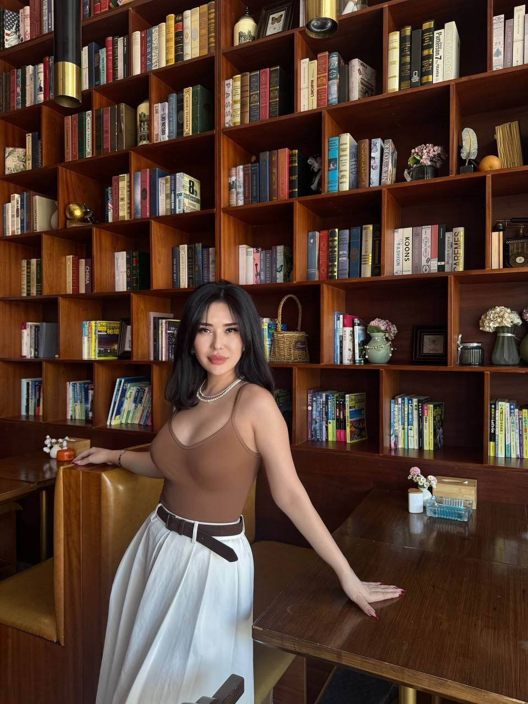
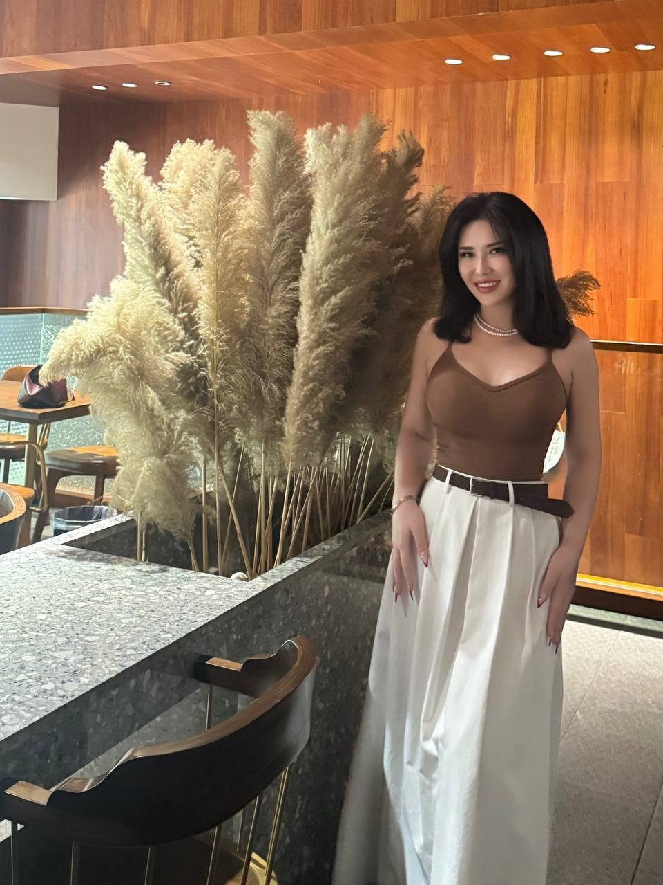

Singapore
Where my story began and where I first learned the value of discipline, family, and possibility.
Singapore born · Canada educated · Houston based
I am Planete Moa, a business-minded woman with a warm heart, a global perspective, and a deep appreciation for thoughtful work, beautiful places, and relationships built on trust.

My story
I was born in Singapore in 1985 and later attended university in Canada. Living across cultures taught me to listen before judging, adapt without losing myself, and find common ground with people whose lives may look very different from mine.
In 2019, I began a new chapter in the United States. Beverly Hills, Miami, and New York each offered a different lesson in ambition, style, resilience, and community. Houston eventually became home: a city with energy, openness, and room to build a grounded life.
Today, I balance professional interests with a more intentional pace. I value meaningful projects, trusted people, and enough time to enjoy the life I worked to create.
Where my story began and where I first learned the value of discipline, family, and possibility.
An education in both the classroom and the wider world, shaped by independence and cultural exchange.
A fresh start through several remarkable cities, each adding confidence, perspective, and resilience.
A place to lead thoughtfully, live fully, and build genuine friendships with good people.
Professional experience
My professional path has centered on energy, marketing, management, and the practical work of helping teams communicate with clarity and purpose.
Experience in the Houston energy environment strengthened my understanding of market dynamics, responsible growth, risk awareness, and the importance of translating technical subjects into language people can trust.
Years across Asia, Canada, and the United States taught me how to read a room, respect different perspectives, and communicate without unnecessary complexity.
I believe good management combines clear standards, calm decision-making, accountability, and enough trust for talented people to do their best work.
Building a new life in a new country sharpened my ability to make decisions under uncertainty, create a support system, and move forward without losing perspective.
What success means to me
Life beyond work
The best life is not only productive. It is physical, creative, social, and full of small moments worth remembering.

What guides me
Trust is earned through consistency, honesty, and the quiet discipline of keeping your word.
The strongest work and relationships are rarely rushed. They grow through patience and good judgment.
Charity, useful introductions, and sincere encouragement are practical ways to make life larger for others.
Warmth means more when it comes with self-respect, clarity, and consideration for both people.
Let us connect
I enjoy hearing how people built their lives, what they are curious about now, and which experiences still make them smile.